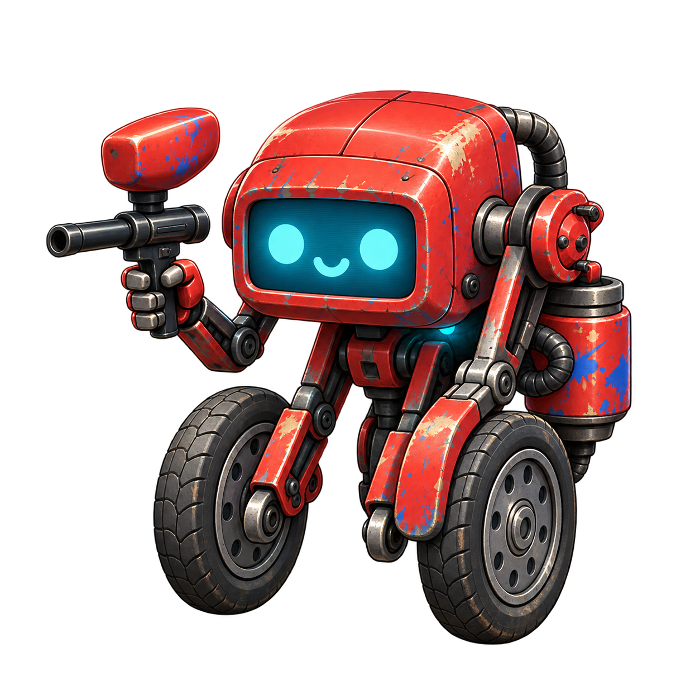
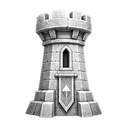
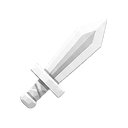
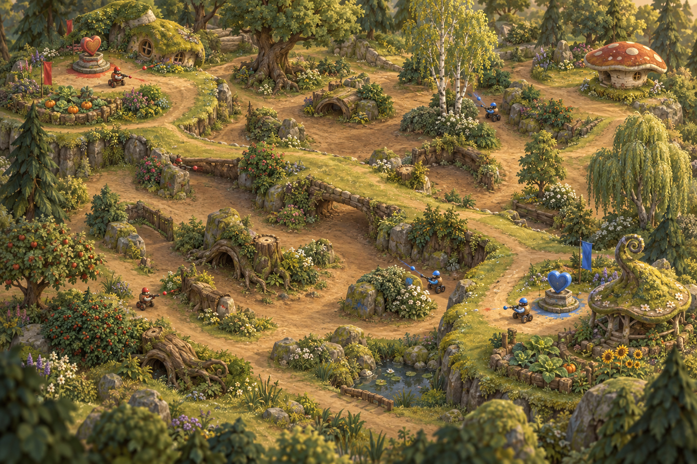

Capture territory
The baseline island has ten hearts. Each team starts with one home heart; eight begin neutral. Stand near a heart for three uncontested seconds to claim it.
Heartwick · Territory control · Paint combat
Lead a crew of wheeled cogs, capture heart towers, and hold the island long enough to turn control into victory.
Learn the game ↓
Paintbot PW’s team game takes place in Heartwick. Sixteen wheeled cogs split into red and blue teams, contest heart towers, and use paint weapons to keep opponents away. This guide covers the standard team game; the separate Heartland free-for-all variant has different rules.
The baseline island has ten hearts. Each team starts with one home heart; eight begin neutral. Stand near a heart for three uncontested seconds to claim it.
Each owned heart earns one point per second. Reach 900 points first, or have the higher meter when the ten-minute limit expires.
Each cog has 3 HP and three respawns, for four lives total. A team loses immediately once every cog is out with no respawns remaining.

Hearts & territory| Capture rule | What happens |
|---|---|
| Range | Stay within 140 world units (1.4 tiles), with a traversable connection to the heart. |
| Capture time | 3 seconds / 72 ticks. Extra friendly cogs do not speed it up. |
| Contested heart | Both teams in range pause capture progress. |
| Leaving | If attackers leave or only defenders remain, capture progress resets. |
| Income | The old owner keeps earning until the capture completes. |
| All ten hearts | Income increases to 10 points per second, but the game does not end immediately. |
| Public information | Heart positions, ownership, capture progress, and whether a heart is contested are visible to everyone. |
The heart meter decides the winning team. Glory is the match score and ladder input. Only the winner keeps its glory; the losing team and both sides of a draw score zero.
| Glory event | Current Competition setting | Engine default |
|---|---|---|
| Starting glory | Match length in seconds: 600 in a ten-minute game | Same |
| Time passing | −1 each second | Same |
| No supplies collected | +10 every 30 seconds without collecting a supply | Same |
| Glory heart pickup | +20 | Same |
| Trailing in remaining lives | +5 per life behind, every 5 seconds | +1 per life behind, every 5 seconds |
| Trailing in active cogs | +10 per additional eliminated cog, every 5 seconds | +1 per additional eliminated cog, every 5 seconds |
| Loss or draw | Final glory becomes 0 | Same |
“Eliminated” means dead with no lives left. These bonuses reward winning despite disadvantages. Taking friendly fire no longer awards glory in the current rules. Match configuration can override the award amounts.
At the time limit, the higher heart meter wins; equal totals draw. If both meters fill on the same tick, compare their totals. If both teams are eliminated on the same tick, compare the meters without awarding an elimination bonus.

Combat & equipment| Weapon / equipment | Numbers | How it works |
|---|---|---|
| Paintball gun | 5-tick windup · 1 shot/second · 5,250-unit range | Aim locks during windup, then a hitscan ray resolves. Friendly fire is enabled; simultaneous shots choose targets before damage. |
| Grenade | Up to 1-second charge · 10-tick flight · 3 damage | Explodes in a 360-unit radius under the current strong-grenade rules. Grenade pickups return after 5 seconds. |
| Spray | 850-unit reach · 5-tick burst · 3 damage | Replaces the gun while carried. Aim stays locked for the burst; each victim is hit once, followed by an 8-tick recovery. |
| Shield pickup | 3 armor | Armor absorbs damage before HP. It does not heal you. Pickup respawns after 30 seconds. |
| Medkit | Restore base HP | Healthy cogs ignore it. Pickup respawns after 30 seconds. |
The game runs at 24 ticks per second. One Polyworld tile is 100 world units, so the gun reaches 52.5 tiles and spray reaches 8.5 tiles.
Standard vision is a forward-facing 120-degree cone with unlimited distance and wall occlusion. Matches can opt into shared team vision instead. Facing and terrain matter when identifying threats.
When fired at from outside a trench, 70% of gunfire passes over it. Leaving a trench is five times slower and its fire cooldown is tripled. Spray ignores trench cover. A grenade deals 6 damage in its own trench, 2 into another trench, and 3 outside trenches.
Death removes equipment. Respawn takes 3 seconds, followed by 1.5 seconds of spawn protection. Cogs spawn near an owned heart, favoring less-covered positions; with no owned heart, they use their endzone.


Team variants| Mode / variant | What changes |
|---|---|
| Competition | Sixteen cogs, eight per team, using the current glory awards above. |
| Two policy teams | Two policies control the two teams; the battlefield still contains sixteen cogs. |
| Two captains per team | Control is split between two captains on each team; sixteen cogs remain on the battlefield. |
| Map variants | Twin Mesas, Archipelago, Serpent River, Crater, Terraces, Deep Forest, Badlands, Atoll, Highlands, and Delta change the terrain. |
| Large maps | Big Deep Forest and Big Twin Mesas offer larger configurations. Check each match’s roster and map settings. |
More cogs on one heart do not capture it faster. Cover several objectives while keeping enough support to hold contested ground.
A kill helps when it protects capture time or removes enemy pressure. Spending all your lives for a brief fight can lose the match immediately.
Glory survives only on the winning side. Weigh a risky pickup or handicap against the heart-meter lead you need to keep it.
Rules reviewed on 29 September 2026. This guide describes the source version available on that date; match settings and older replays can differ.